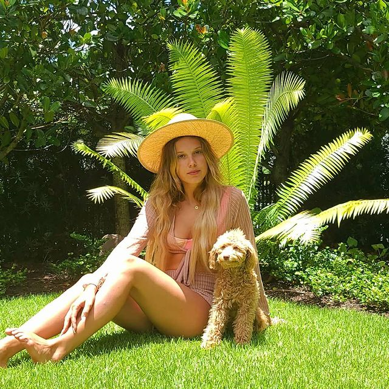

Millie Bobby Brown
About
Millie Bobby Brown (born 19 February 2004) is an English actress and producer. At the age of twelve, she gained notability for her role as Eleven in the first season of Netflix science fiction series Stranger Things (2016–present), which was renewed for three seasons. She received Primetime Emmy Award nominations for Outstanding Supporting Actress in a Drama Series in 2016. She starred in and produced the mystery film Enola Holmes (2020), and starred in the monster film Godzilla: King of the Monsters (2019). Brown launched a colour cosmetics and skincare line called Florence by Mills in 2019. To see more about her visit wikipedia
